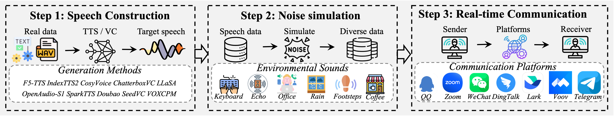
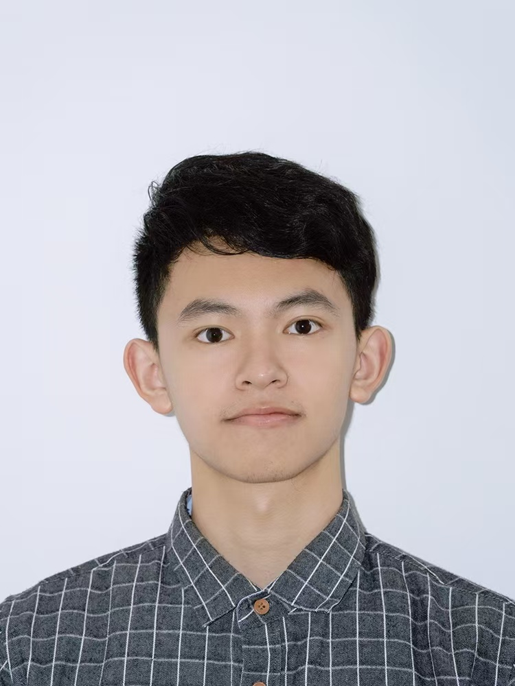

1
Register your team
Complete the official registration form with team name, member names, contact emails, and affiliation information.
Registration FormWelcome
RTC-SDD is the first speech deepfake detection challenge designed for real-world real-time communication scenarios.
Speech deepfake detection is becoming necessary because modern text-to-speech and voice conversion systems can generate increasingly natural and identity-consistent speech. In practice, the risk is not limited to clean files distributed offline. More dangerous attacks can occur during online meetings, social calls, remote identity verification, and cross-platform voice communication.
The RTC-SDD (Real-time Communication Speech Deepfake Detection) challenge aims to advance robust and generalizable detection methods for real-world speech deepfakes in real-time communications.
We welcome participants from academia and industry to join this challenge and collaboratively advance the development of speech security.
The unknown nature of internal processing pipelines within RTC platforms.
Shifting from traditional noise robustness to robustness against distortions introduced by RTC front-end processing.
Generalizing to unseen RTC platforms.
Quick Access
Use these entries for baseline code, registration, and official submission.
Challenge Overview
The RTC-SDD benchmark is constructed through a three-stage pipeline: speech construction, noise simulation, and real-time communication transmission.

The construction process starts from speech construction. We first collect real speech and then generate target speech using ten state-of-the-art TTS/VC synthesis technologies, covering diverse generation mechanisms and spoofing artifacts.
Next, the dataset is split into training, development, and evaluation subsets. For the evaluation set, environmental noise simulation is applied as shown in Step 2, including keyboard, echo, office, rain, footsteps, and coffee-shop sounds.
Finally, the constructed speech data are transmitted through seven mainstream social-media and meeting platforms, including QQ, Zoom, WeChat, DingTalk, Lark, Voov, and Telegram. This produces RTC-transmitted online samples that better reflect practical communication scenarios.
Important Dates
The following schedule can be adjusted when the official ICASSP 2027 challenge arrangement is finalized.
Contact Us
For registration, dataset access, submission format, Codabench issues, or challenge rules, contact the organizing team.
Leaderboard
This section will display Codabench scores, team names, and final rankings after the leaderboard is officially enabled.
RTC-SDD Challenge
Speech deepfake detection for real-time communication platforms.
Introduction
Most existing speech deepfake detection benchmarks focus on offline files. However, practical attacks often happen during online meetings and social communication. In such cases, speech is transformed by RTC pipelines before it reaches the receiver, and the detector must operate on the transmitted signal rather than the original generated waveform.
The RTC-SDD Challenge studies this more realistic setting. It evaluates whether detection systems can remain reliable when generation artifacts are weakened, reshaped, or mixed with platform-specific communication artifacts.
Goal: build robust speech deepfake detection systems that generalize across generators, noise conditions, and RTC platforms.
Input samples are speech utterances after real-time communication processing. The detector must determine whether each sample is bonafide or spoofed.
Task Definition
Given an input speech utterance, participants are required to predict whether the input is real or fake. Real-time platform transmission does not alter the original speech labels. The training and development data are fully provided by the organizers, and we will provide both the offline speech before transmission and the online speech after transmission.
The evaluation set exclusively contains the online speech after transmission and is divided into two subsets: Subset 1 consists of clean speech transmitted through RTC platforms, and Subset 2 consists of noisy speech transmitted through RTC platforms (note that the training and development sets do not include noisy speech). Additionally, the evaluation set contains data transmitted through unseen platforms that are not present during the training phase.
Instructions
Recommended participation workflow from registration to final submission.
Complete the official registration form with team name, member names, contact emails, and affiliation information.
Registration FormUse the official RTCFake dataset and baseline code as the starting point. Keep train, development, progress, and evaluation partitions logically separated.
Train on the official training data, tune on the development set, and report validation performance. Avoid using progress or final evaluation data for tuning or analysis.
Prepare a two-column score file using the required format: utterance_id score. Scores should be normalized to [0, 1].
Rules
Participation, data usage, external resources, submission format, and reproducibility requirements.
Evaluation Metrics
The official evaluation metric is Macro-F1 over the spoof and bonafide classes:
Macro-F1
Macro-F1 = 1/2 (F1sp + F1bf).
The clean and noisy online subsets are evaluated separately. Let Fclean and Fnoisy denote their Macro-F1 scores. The final score is computed as:
Final Macro-F1
Macro-F1final = λFclean + (1 − λ)Fnoisy, where λ = 0.3.
This weighting assigns more importance to the noisy subset, encouraging robust detection under challenging RTC conditions.
Competition Rules
Participants may join individually or as a team. Each participant can be affiliated with only one team during the challenge.
The official training and development sets can be used for model training, validation, and model selection.
Publicly released pretrained model weights and standard augmentation methods are allowed. Closed-source model services and unpublished private weights are not allowed unless the organizers explicitly approve them.
Submissions should follow the official Codabench format. Each score must correspond to exactly one utterance in the official evaluation list.
id score. Higher scores indicate higher spoof likelihood.Top-ranked teams invited to submit papers should provide sufficient technical details, including model architecture, training strategy, augmentation, external resources, and hyperparameters.
Organization
RTC-SDD Challenge organizing team.

For any question about registration, dataset access, baseline code, submission format, or rules, contact the RTC-SDD Challenge team.